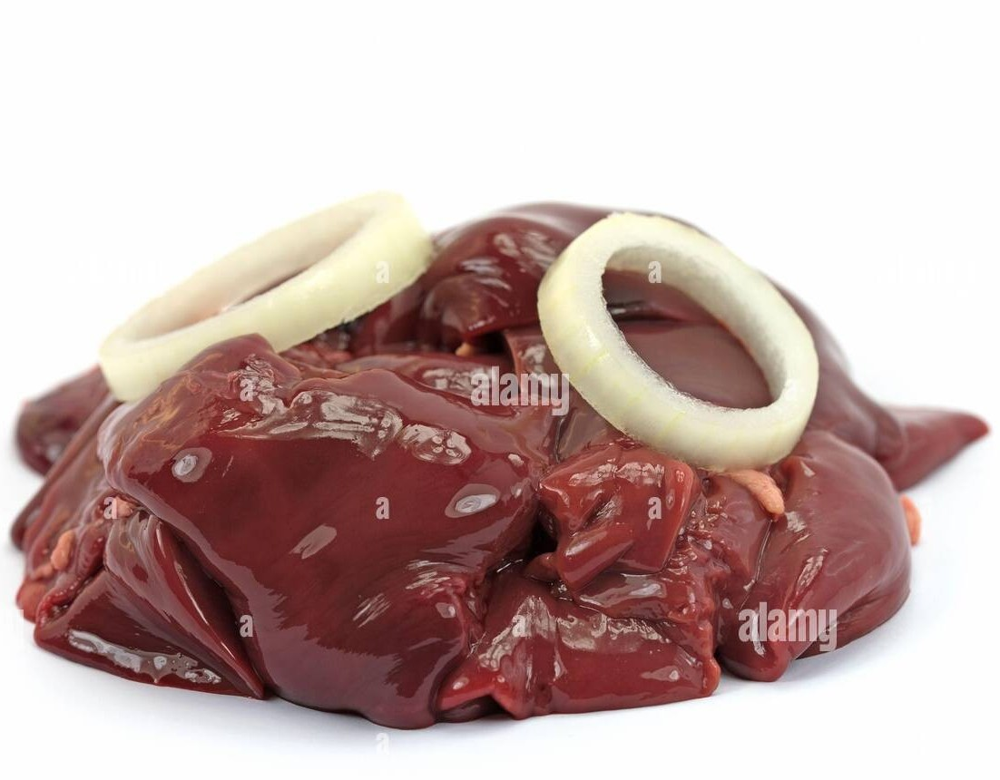

Poulets
Avec Yaya nos chers mamans et sœurs achètent des poulets frais déjà
abattus, plumer, nettoyer et en plus livrer à domicile, tous ses
services sont réalisés à un bon prix, en plus aucun frais de livraison
est demandé !
Porcs
Depuis septembre 2020, Yaya a commencé l'élevage des porcs de la race
landrace et largewhite. Toujours dans l'intérêt de nos mamans et Papas
qui veulent consommer une bonne viande blanche sans gras, nos porcs
vendus en détails sont débarrassés de la partie grasse !
Fumiers
Le fumier actuellement disponible est celui du porc, ce sac 50Kg est
vendu à 3000FC, une tonne soit 20 sacs de 50 KG sont vendus à 50 000FC
Nb: le client vient chercher personnellement le fumier avec ses sacs de
50 KG. La manutention sera assurée par Yaya.

Abattis
Nous nous assurons des soins des abbatis. La livraison est rapide et la
propriété est un facteur important dans notre travail.